01
Global ocean microbiology
Connecting observed plankton communities with global ecological and physical-oceanographic models.
Microbial ecologist
Minima Maxima Sunt
Read my biographyDuring my PhD at the University of Technology Sydney (2019–2022), I investigated microbial hazards in coastal environments. My work distinguished faecal contamination from animal and human sources, helped government bodies remediate recreational beaches, and traced human pathogens and their capacity for antibiotic resistance. We found that these hazards increase following climate-driven rainfall events, posing risks to human health and aquaculture.
Since joining the Fuhrman Lab at the University of Southern California in August 2023, my research has expanded into global ocean microbiology. My main project has been developing, maintaining, and improving the Global rRNA Universal Metabarcoding of Plankton database—GRUMP. The project provides real observations for comparison with the MIT DARWIN model, helping us understand plankton distributions, biogeochemical cycles, and how microbial abundances may change with ocean conditions.
I have also integrated genomic internal standards into DNA extractions, coupling amplicon sequencing with analysis of single-copy genes from metagenomes to obtain absolute abundances of marine plankton.
01
Connecting observed plankton communities with global ecological and physical-oceanographic models.
02
Using 16S and 18S rRNA marker genes to profile marine microbial and eukaryotic communities together.
03
Integrating genomic internal standards, amplicon sequencing, and metagenomics to quantify plankton.
04
Tracing faecal contamination, antimicrobial resistance, and pathogens in recreational waters.
In the field
1 / 16
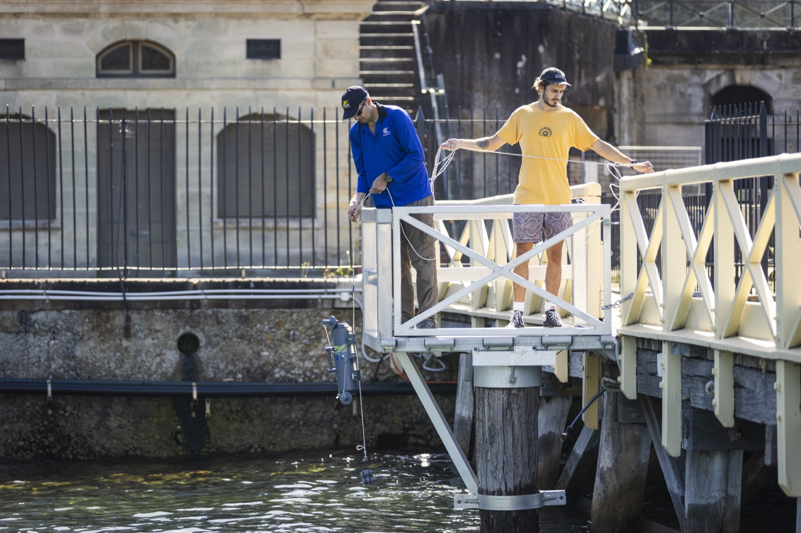
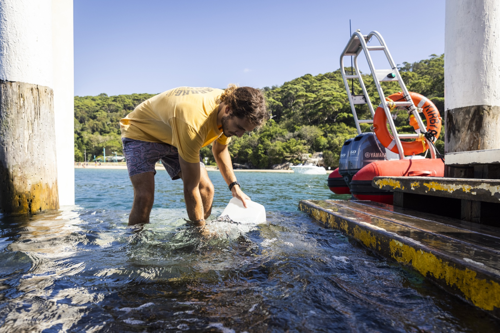
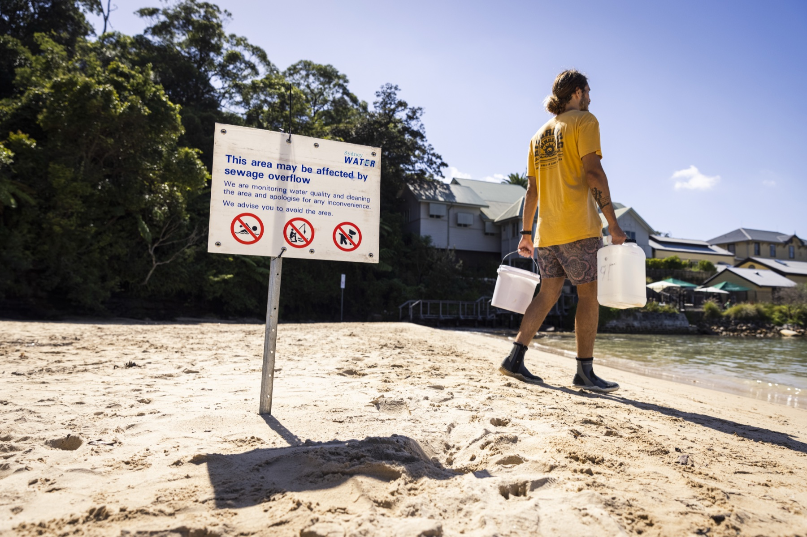
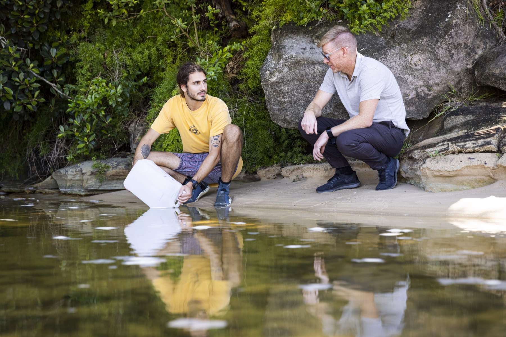
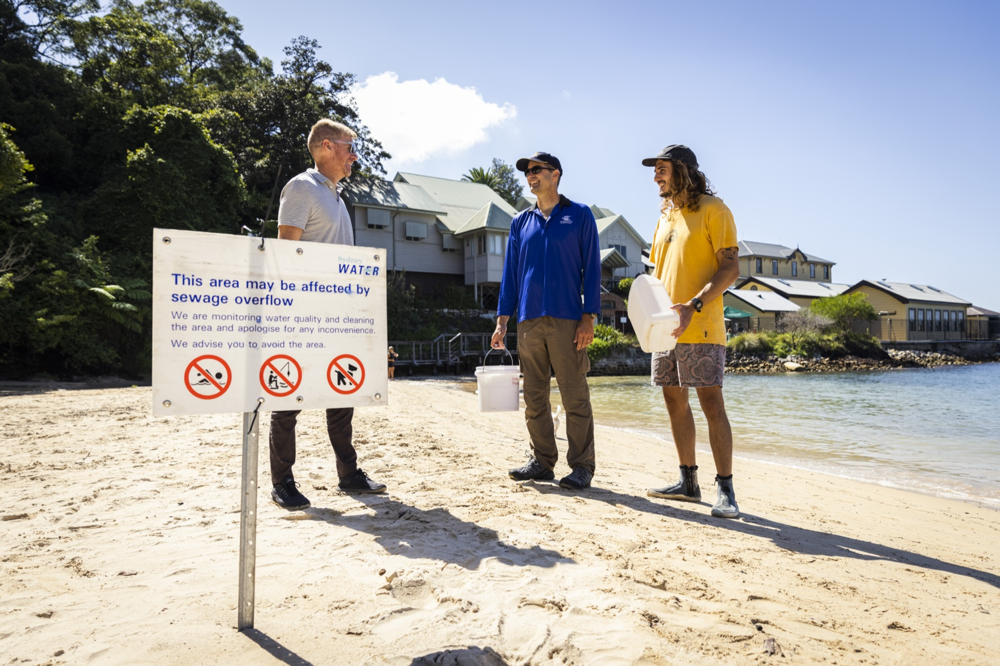


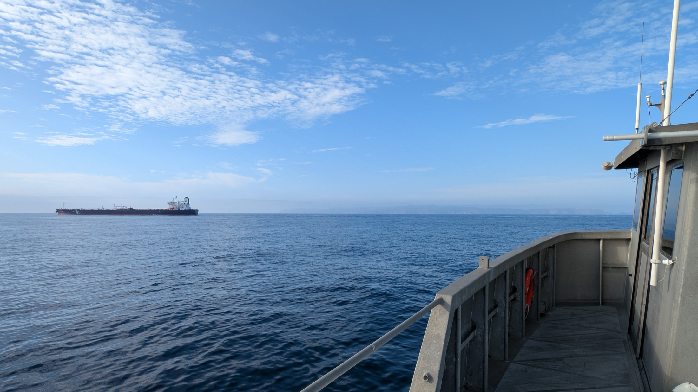
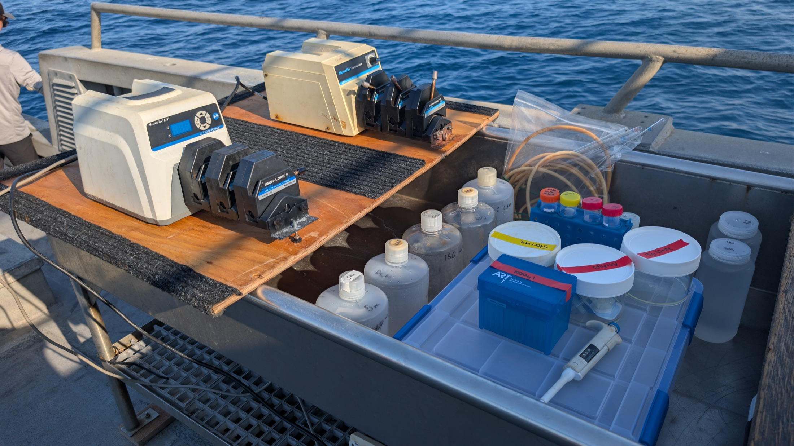
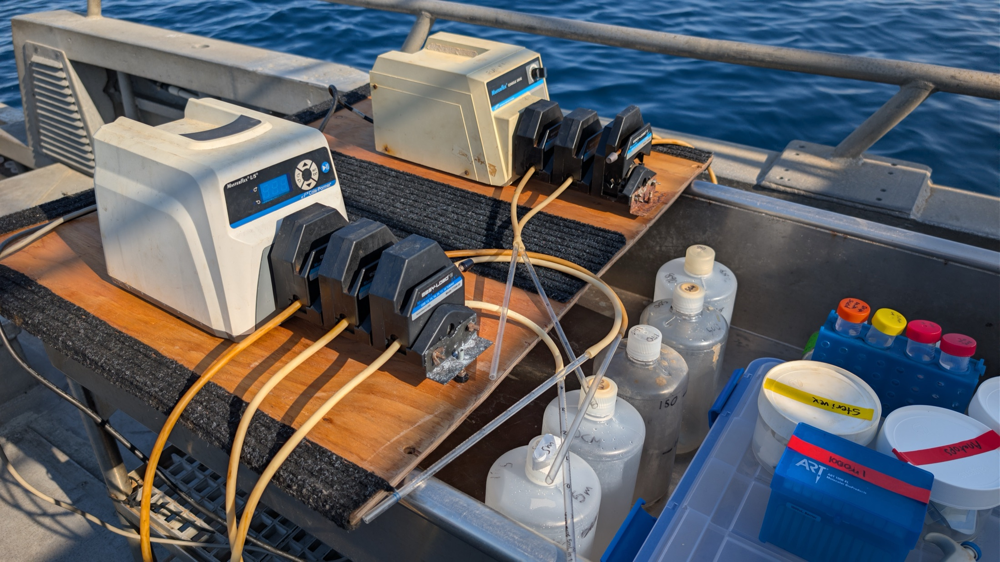
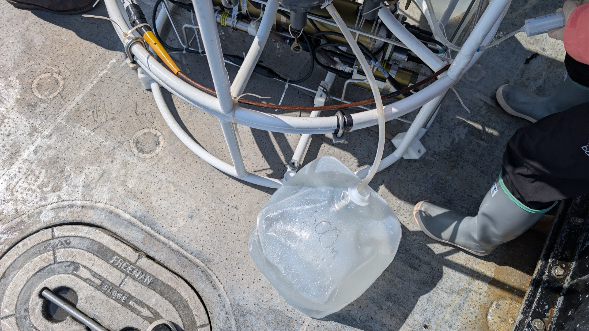
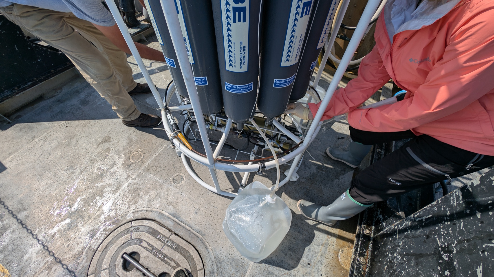
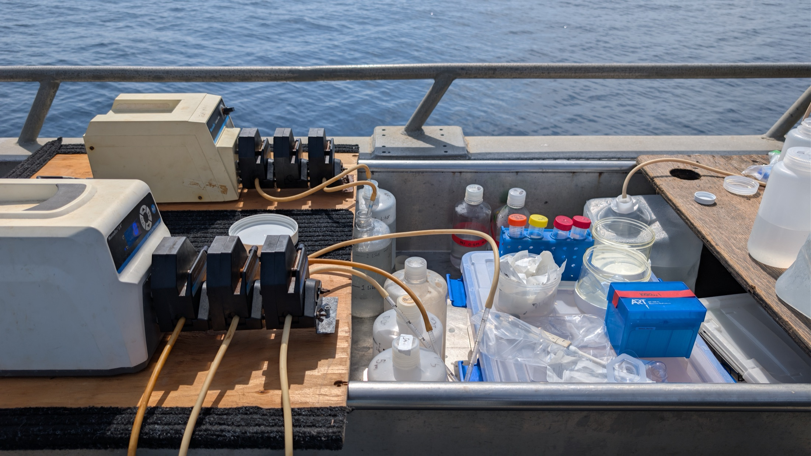
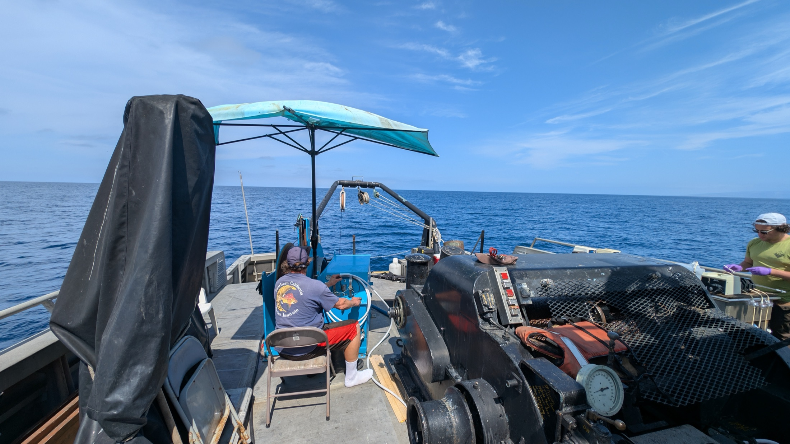
First and co-first author highlights.
Jesse McNichol*, Nathan L. R. Williams*, Yubin Raut, et al. *Co-first authors
Nathan L. R. Williams, Qicheng Bei, Yubin Raut, and Jed A. Fuhrman
Nathan L. R. Williams, Nachshon Siboni, Jaimie Potts, M. Campey, C. Johnson, S. Rao, Anna Bramucci, Peter Scanes, and Justin R. Seymour
Nathan L. R. Williams, Nachshon Siboni, Sandra L. McLellan, Jaimie Potts, Peter Scanes, C. Johnson, M. James, V. McCann, and Justin R. Seymour
Nathan L. R. Williams, Nachshon Siboni, William L. King, Varunan Balaraju, Anna Bramucci, and Justin R. Seymour